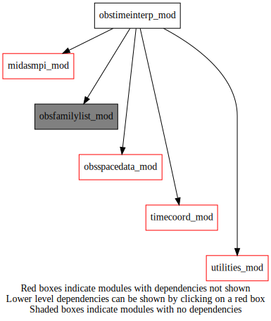

Dependency Diagrams:
 Direct Dependency Diagram¶
Reverse Dependency Diagram¶
Description
MODULE obsTimeInterp_mod (prefix=’oti’ category=’4. Data Object transformations’)
- Purpose
To store public variables and procedures related to the time coordinate.
Quick access
- Types
- Routines
oti_deallocate(),oti_flagobsoutsidewindow(),oti_gettimeinterpweight(),oti_gettimeinterpweightmpiglobal(),oti_settimeinterpweight(),oti_setup(),oti_setupmpiglobal(),oti_timebinning(),oti_timeinterpweightallzero()Needed modules
midasmpi_mod: MODULE midasMpi_mod (prefix=’mmpi’ category=’8. Low-level utilities and constants’)
utilities_mod: MODULE utilities_mod (prefix=’utl’ category=’8. Low-level utilities and constants’)
timecoord_mod: MODULE timeCoord (prefix=’tim’ category=’7. Low-level data objects’)
obsspacedata_mod: MODULE obsSpaceData_mod (prefix=’obs’ category=’6. High-level data objects’)
obsfamilylist_mod: MODULE varNameList (prefix=’ofl’ category=’7. Low-level data objects’)Types
- type obstimeinterp_mod/struct_oti¶
- Type fields
% null [real ,pointer]
% timeinterpweight (*,*) [real ,pointer]
% timeinterpweightmpiglobal (*,*,*) [real ,pointer]
Variables
Subroutines and functions
- subroutine obstimeinterp_mod/oti_timebinning(obsspacedata, nstepobs)¶
- Arguments
obsspacedata [struct_obs ]
nstepobs [integer ]
- Called from
inn_computeinnovation(),min_minimize(),ose_compute_hbht_ensemble(),midas_diaghbht,midas_letkf- Call to
utl_abort(),tim_initialized(),obs_numheader(),tim_getstepobsindex(),tim_getdatestamp(),obs_headelem_i(),obs_getfamily(),obs_bodyelem_i()
- subroutine obstimeinterp_mod/oti_setup(oti, obsspacedata, numstep, headerindexbeg, headerindexend[, interptype_opt[, flagobsoutside_opt]])¶
- Arguments
oti [struct_oti ,pointer]
obsspacedata [struct_obs ]
numstep [integer ]
headerindexbeg [integer ]
headerindexend [integer ]
- Options
interptype_opt [character ]
flagobsoutside_opt [logical ]
- Called from
- Call to
utl_abort(),tim_initialized(),tim_getstepobsindex(),tim_getdatestamp(),obs_headelem_i(),obs_elem_c(),oti_settimeinterpweight(),oti_flagobsoutsidewindow(),oti_setupmpiglobal()
- subroutine obstimeinterp_mod/oti_deallocate(oti)¶
- Arguments
oti [struct_oti ,pointer]
- Called from
- subroutine obstimeinterp_mod/oti_setupmpiglobal(oti)¶
- Arguments
oti [struct_oti ,pointer]
- Called from
- Call to
- subroutine obstimeinterp_mod/oti_settimeinterpweight(oti, weight_in, headerindex, stepobs)¶
- Arguments
oti [struct_oti ,pointer]
weight_in [real ,in]
headerindex [integer ,in]
stepobs [integer ,in]
- Called from
- function obstimeinterp_mod/oti_gettimeinterpweight(oti, headerindex, stepobs)¶
- Arguments
oti [struct_oti ,pointer]
headerindex [integer ,in]
stepobs [integer ,in]
- Return
weight_out [real ]
- Called from
- function obstimeinterp_mod/oti_gettimeinterpweightmpiglobal(oti, headerindex, stepobs, procindex)¶
- function obstimeinterp_mod/oti_timeinterpweightallzero(oti, headerindex)¶
- Arguments
oti [struct_oti ,pointer]
headerindex [integer ,in]
- Return
allzero [logical ]
- Called from
- Call to
- subroutine obstimeinterp_mod/oti_flagobsoutsidewindow(oti, obsspacedata, headerindexbeg, headerindexend)¶
- Arguments
oti [struct_oti ,pointer]
obsspacedata [struct_obs ]
headerindexbeg [integer ]
headerindexend [integer ]
- Called from
- Call to
utl_abort(),oti_timeinterpweightallzero(),obs_headelem_i(),obs_bodyset_i(),obs_headset_i(),oti_settimeinterpweight()
{kind=link}
{kind=link}